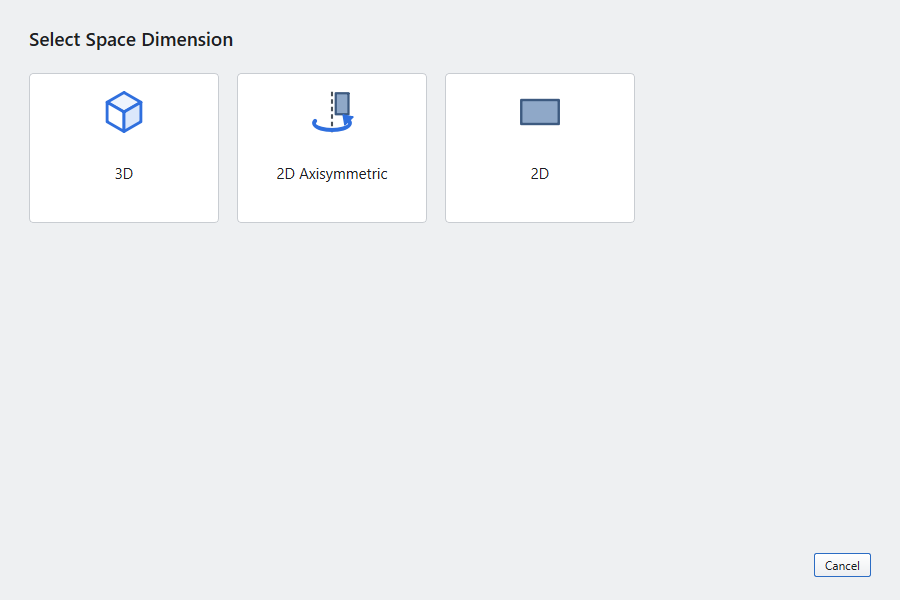
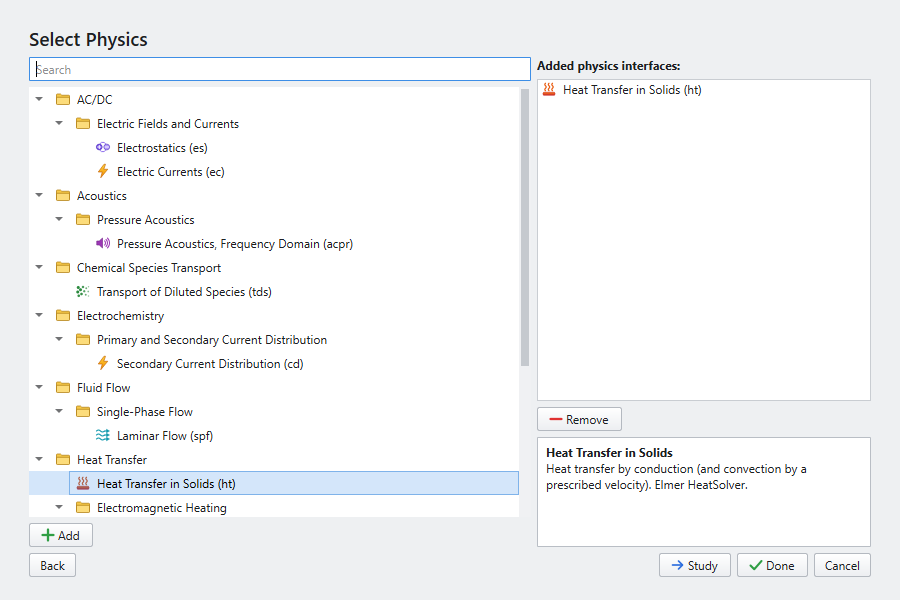
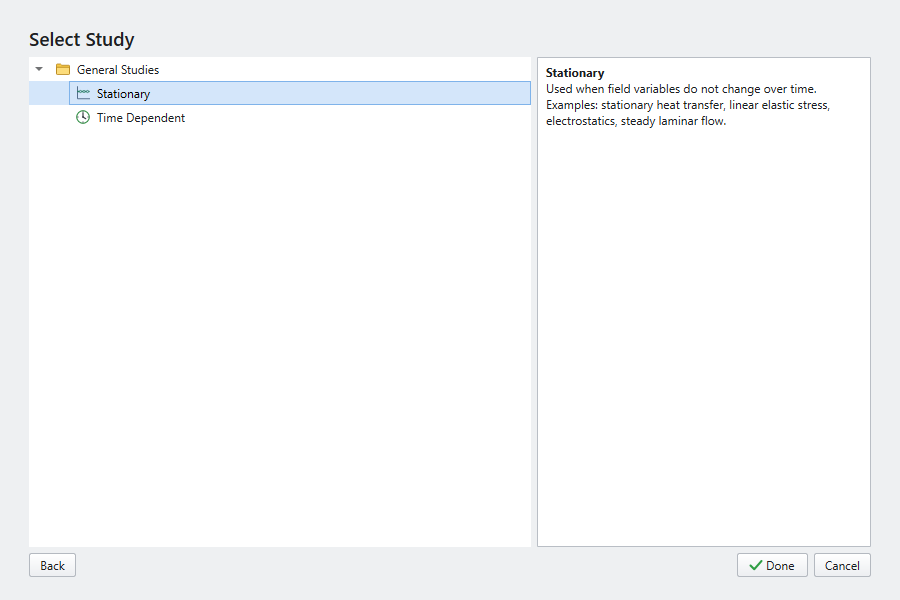

Models, files and the Model Builder
Starting a model
(Ctrl+N) opens the New window, with three ways to start:
- Model Wizard
-
Pick a space dimension (3D, 2D Axisymmetric, 2D), one or more physics interfaces, and a study type. The wizard creates the component, the physics with their default features, an empty geometry, and the study. Several physics can be added in one go. Some entries, such as Joule Heating and Thermal Stress, add two interfaces and their coupling.
- Blank Model
-
An empty tree with Global Definitions and Results. Add a component with , physics with , and a study with .
- Application Libraries
-
Ready-made, solvable models. See Application Library examples.



Components and space dimensions
A model has one Component with a fixed space dimension:
| Space dimension | Use it for |
|---|---|
3D |
General solids and fields. |
2D |
Planar problems: cross-sections of long objects (plane strain), thin plates (plane stress), planar fields and flows. |
2D Axisymmetric |
Bodies of revolution about the z axis, with coordinates r (x) and z (y). Integrals over the model are taken in the revolved geometry (×2πr) unless you turn that off. |
Saving and opening
-
(Ctrl+S) and (Ctrl+Shift+S) write an
.esmfile. It is a zip archive with the model (as JSON) and the computed solutions, so plots and tables come back when you open it. -
(Ctrl+O) and reopen models. You can also pass a file on the command line:
elmerstudio model.esm. -
When you open another model or close the window, Elmer Studio asks about unsaved changes. It also removes the temporary working folder of the model you leave.
Working with nodes
Everything in the model is a node of the Model Builder tree:
-
Add nodes from the ribbon or by right-clicking the parent node. New nodes are labelled with a number (Temperature 1, Temperature 2) and get a short name (
temp1) used in expressions and variables. -
Rename with F2; Duplicate with Ctrl+Shift+D; Delete with Delete.
-
Disable (F3) and Enable (F4) a node to leave it out of the model without losing its settings.
-
Reorder with Ctrl+Up and Ctrl+Down. Order matters in the geometry sequence (features build top to bottom) and among physics features (later wins).
-
Undo (Ctrl+Z) and Redo (Ctrl+Y) cover every change to the tree and to settings.
After a change, the geometry and mesh are rebuilt the next time they are needed (for example when you compute).
Exporting
| Command | Result |
|---|---|
A folder with the Elmer mesh and |
|
(Export) |
A PNG of a plot group, at the size you choose. |
(Export) |
Coordinates and one or more expressions at every mesh node (last solution), as CSV. |
(Export) |
The solution ( |
An HTML report: the parameters with their SI values, the component’s nodes, and a picture of each 3D/2D plot group. |
See Results › Export.